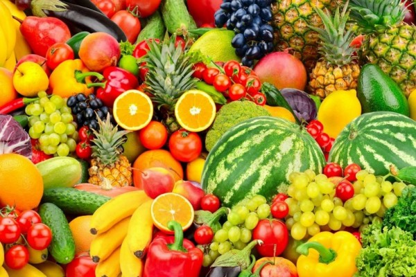

Buah-buahan
Buah-buahan adalah sumber vitamin dan mineral esensial yang sangat baik, ditambah kandungannya yang kaya serat. Buah-buahan juga menyediakan berbagai macam antioksidan yang dapat meningkatkan kesehatan, seperti flavonoid. Beberapa kandungan nutrisi dari buah juga ada yang tidak bisa diproduksi sendiri oleh tubuh, sehingga Anda membutuhkan buah-buahan untuk memenuhi asupan nutrisi tersebut.